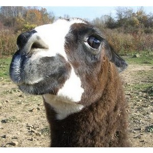

Málokdo to ví, ale Luma nebyl můj první CS server. Tehdy, před cca 7mi a více lety jsem byl připojen do sítě CZFree, kde bylo pár špičkových serverů. Namátkou Pandora a Morgoth. V té době jsem, díky této hře, poznal pár skvělých lidí, se kterýma se občas vídávám i po těch letech. Tehdá jsem měl v šatní skříni stroj, který sloužil jako router a tak nás s bratrem napadlo, že bychom mohli zkusit pustit non-steam server. Pojmenoval jsem ho Marny Server. Marný protože bylo maximum 8 hráčů a i tak lagoval...Označení _marny jsem si nechal později v nickname, které vykrystalizovalo v označní lumáckých adminů.
Později se mi podařilo domluvit hosting v serverovně a tak se začala rodit Luma. Jméno bylo inspirováno clanem, který jsme měli v CZFree (Lumíci).
20. února roku 2007 jsem napsal první zprávičku na tento web. Jednalo se o oznámeni spuštění non-steam serveru Luma. Jednoho.
Luma prodělala pády i vzestupy. Nejprve byl jeden PUB server, později DM server, který se ale neujal. Tak byl změněn na AIM/FY/AWP a na pubu byly zrušeny malé mapy.
Jelikož to vypadalo, že je celkem zájem, tak jsem tenkrát spustil TG/CW server. Nicméně se ukázalo, že takový nápor Luma neutáhne. Tak začalo první stěhování, které způsobilo první odliv hráčů. Tak jsem se domluvil s poskytovatelem, že dočasně přesměruje starou IP na novou. Nicméně to pomohlo jen jako dočasné řešení.
Mezitím někdy v této době přibyl na webu banlist, psychostats apod. Tehdy také započala spolupráce s klukama z klanu [MKA], která se později ukázala jako obrovská chyba (chytráci zaheslovali servery apod...).
Server pořád nestačil a tak se Luma opět stěhovala. Což znamenalo zase novou IP adresu. Na druhou stranu byl spuštěn dlouho očekáván W3 mód.
Co ale čert nechtěl, tak na přelomu roku se opět mění IP, kvůli tomu, že provider dal někomu stejnou adresu jako nám. Výsledek? Nic nejelo. A aby toho nebylo málo, tak pár měsíců na to jsem omylem smazal databázi s bany, expy a psychostats. Tak jsem aspoň spustil teamspeak server.
Od cca poloviny roku 2008 mám ve vlastnictví doménu luma-server.eu, takže stránky mají příjemnější adresu než původní luma.over.cz.
Pak jsem opět žongloval s různými módy, vypínal a zapínal servery podle vytížení "jen" proto, aby byl ping i lagy co nejmenší. V ideálním případě bylo serverů pět.
Technika je ale zrádná, umřely disky. Luma už má 3 roky a tak je čas ji pořídit vlastní hračku. Inu, koupil jsem železo, přesunul servery (opět) do jiné serverovny a zároveň jsem redesignoval, podle Honzoidova návrhu, web. Z Lumy se stala Luma Reincarnation.
Jako přivítání byl server hacknut díky chybě v redakčním systému webu. Trochu bojovka, ale díra nalezena, opravena a na serveru konečně puštěn monitoring a psychostats zaměněny za hlstats.
Rok po spuštění nového serveru jsem zjistil, že stávající housing mi nevyhovuje (již si přesně nepamatuju proč) a tak se stroj stěhoval z Prahy do Brna (kde je stále) a IP adresy se koncem roku 2010 opět změnily. Tentokráte naposled.
Dlouho mi bylo jasné, že "sláva" Lumy je pryč. Samozřejmě byly snahy to změnit (například reklama), byly snahy se vrátit zpět "na vrchol", ale už to nikdy nebylo takové jako na začátku. Já se o server přestal starat, četnost updatů byla vidět na webu, na fóru. I komunikace na ICQ byla stále řidší. Svět se změnil (jak ten herní, tak reálný). Zestárli jsme, začali jsme pracovat, někteří se oženili, někteří se stali rodiči, někteří přestali hrát CSko a nebo proste šli jinam.
Jsou to 3 roky od poslední změny adres. Drahno let od doby, kdy jsem si naposledy zahrál. Drahno let od posledního srazu. Drahno let od doby, kdy jsem vás, staré admin mazáky (a samozřejmě i ostatní), viděl naposledy. Drahno let od doby, kdy byly Luma servery plné.
Nezbývá než udělat to, co jsem již několikrát avizoval. Je čas se rozloučit. Děkuji všem, kteří stáli u zrodu Lumy, děkuji adminům za jejich pomoc, děkuji hráčům za jejich účast. Děkuji CSku, té skvělé hře, která mi umožnila potkat tolik prima lidí. Snad se ještě někdy, někde potkáme...
Děkuji!